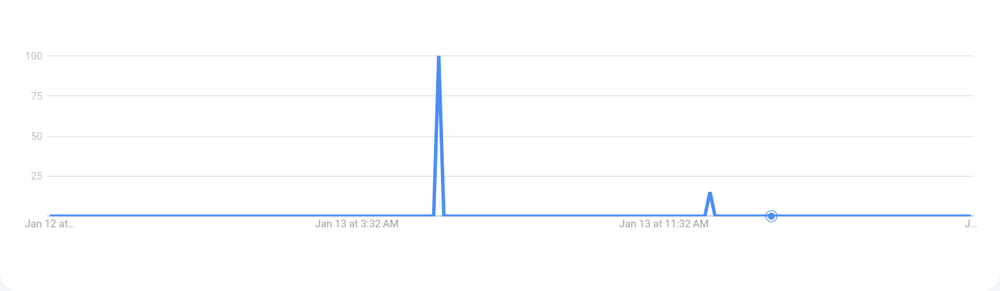
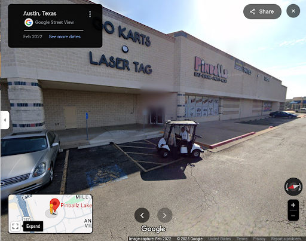

How can I be sure that the information I’ve found online is real and reputable information and not a really convincing article from The Onion?
They exist! Believe it or not you can look things up on the internet. Every search engine will have a slightly different response and user experience when posed with the question “What is Jeremy Renner's favourite colour?”
Microsoft Bing is a search engine owned by, you guessed it, Microsoft. When asked what Jeremy Renner’s favourite colour is, it shows a box with simply the word “Red”, with subtext beneath it stating “Jeremy Renner’s favorite color is red.” to clear things up for the user. A footnote is attached to this in case you really want to be sure what Jeremy Renner’s favourite colour is. Below this a few links to articles claiming to know the secret of his favourite colour are shown. To the right a Wikipedia box gives you a rundown on who Jeremy Renner is in case you need a refresher. Lurking in the shadows next to the search bar is the looming presence of Microsoft Copilot, ever-present and begging to be touched.
Qwant is a search engine whose first words out of the womb and onto your computer screen are “The search engine that values you as a user, not as a product”. This is likely in an attempt to make the user feel safer and more secure when using this search engine, and I assume this means that they don’t feast off of your data like a hungry wolf, though I cannot attest to their practices. A quick “Google” search (used as a verb since it has undergone the same process that the brand name Band-Aid has, in reality I use Brave as my primary search engine) and the action of clicking on the Wikipedia result shows that it has a long running dependence on Bing and draws many of its results from the search engine. It simply gives you links to articles and websites mentioning Mr. Renner’s favourite colour, and no summary or large, bold words.
Searx is a rather barebones search engine, which is a benefit for many users, as it does not have a login option and all cookies are stored in the browser and not a server. Searx, when asked the famous actor;s favourite colour, similarly shows links to websites with mentions, but also has tabs for science and social media, the latter of which would be the most helpful for this search query.
Yahoo’s homepage is the most polluted and cluttered so far, and the search bar is hardly the focus of the page. Weather, news, trending searches, and horoscopes fill the user’s view. When asked the star’s favourite colour, it provides the same links as most other search engines, with a box to the right with a search suggestion to learn more about Jeremy, as well as an AI chat tab under the search bar, which I’m sure gets a lot of action.
Startpage immediately asks you to make it your default search engine, reminiscent of the Edge browser begging the user not to put it down when it senses them searching for the link to download Chrome the minute they set up their new computer. It shows us the expected links as search results, as well as a box to the right with what it assumes are relevant results from Reddit (in reality it's a post talking about user’s favourite colorists).
duckduckgo gives us quite a number of suggested search options to the right of the provided results, and is likely the most well known private browsing search engine. It’s allegedly the default search engine on LinuxMint.
After completing this segment, here was the google trends result for the search query “What is Jeremy Renner’s favourite colour”
There's a lot of them!
http://www.americaspower.org/ This site serves as an informative website about the US coal fleet, and how the use of coal in the power grid is important. This site does not appear to be facetious.
http://www.carbonmonoxide.ie/ This site warns about the dangers of carbon monoxide, how it can manifest, and how to prevent it. It is a rather scarce site with little information about who owns or created the site, but all of the advice given is sound and helpful. With the exception of the bird (see below), I would say this site serves a legitimate and useful purpose, and is not facetious.

https://dogecoin.com/ This site is a bit of a twist, as it initially appears to be a comedic site to the internet savvy, due to the wide use of comic sans and odd syntax. Yet, it is a legitimate source for the cryptocurrency Dogecoin, with substantial information, resources, and Shiba Inus.
http://www.dhmo.org/ Whoever made this website has no grasp on UI design. Much like the alarm from a carbon monoxide detector, alarm bells went off in my head immediately upon opening the site. The language used in many areas is odd and in some parts reminiscent of religious propaganda for some reason, but the site does appear to be made in earnest. It was created by Dr. Tom Way in 1998 as a way to educate of the “scare tactics” used by the media about DHMO (water).
https://coalcares.com.theyesmen.org/index.html This site is a satirical campaign meant to draw attention to the harm done by using coal as an energy source on kids’ lungs. It is not affiliated with BHP Billiton.
https://pinballz.com/ You made this site. I assume as a way to demonstrate to classes that websites can appear genuine until further investigated… is what I would have said before continuing to look through the site and its linked social media. Pinballz has an instagram with over 7,000 followers, up to date post history with recent events and posts as recently as 5 hours ago at the time of writing this. It also shows up on google maps.
I assume that you or Sitebolts were hired to make this site and you got permission to (or snuck in) an easter egg of yourself when a certain key combination is entered. That or you spend hours a week keeping up this long con.
https://www.shibatoken.com/ This seems to be a site for a cryptocurrency made as a knock off or rival of Dogecoin. It probably originated as a meme. Sure it's a legitimate token that has users, but the concept of NFTs are a joke to me so this one goes in stupid jail.
http://www.theguardian.com/environment/coal This is the search query “coal” from the news site The Guardian. A daily newspaper from the UK, and also very well known.
https://opensea.io/collection/tacogatosnft-official I’m going to kill myself if I have to research another NFT. OpenSea is a well known NFT market site, and TacoGato appears to be real unfortunately.
https://lucasin.space/ This site plays music and displays multiple spinning images of Lucas von Hollen.
http://content.sierraclub.org/coal/ This link rendered a 404 error so I can’t determine its purpose or seriousness.
http://worldtoilet.org This is a site for the Singapore based non-profit WTO with the mission to provide suitable toilets and sanitation worldwide.
https://capitalyield.money/ This site is for users to mine cryptocurrency through providing network coverage or something like that. This has to be a scam.
There’s lots of information on the internet
3a: I don’t know what I need to look up for this one. Do I need to find an article on “how to transfer an mp3 file to and from a USB”? I cannot express how simple and common of a task that is, and if it’s not then call me old fashioned. I store all of my favourite music via mp3. Don’t believe me?
google drive of musicI uploaded a copy of my most recent folder to google drive. I intend to continue expanding my library, as it's rather scarce right now. Whenever I’m at my computer I use the Youtube Music site for music (since I don’t pay for it, it's harder to get around the ads on mobile) and a media player on my phone, but I have all the mp3s stored locally on my computer, phone, and my hard drive. I may be insane but the internet won’t take away my music. Streaming services are so goddamn expensive and even when I managed to get around it with Youtube Revanced on my phone it wouldn’t load half the time.
If someone REALLY doesn’t know how to do it, here’s a wikihow
WikiHow3b: The patent for the spinning icecream scoop was approved in 1999 under the patent number US5971829A. How did I find this? I just typed in “spins a scoop of ice cream around in a circle so that you can lick it easier patent” and then selected the patents.google.com result. Other results mentioning it included the Smithsonian.
Google PatentsHow to explain the internet to someone who frequently uses the internet but knows nothing about it
1: Anyone can make a website, so just because something is on a website does not make it true. 2: There is almost always a way around whatever stupid barriers the technology has. Can’t watch ad-free? Ad Blocker. Can’t download this song? https://ezmp3 cc/v3. The computer is your bitch and you can make it bend to your will. 3: For the love of god do not enter your information into any site that you are not 100% sure is legitimate and will not sell your SSN on the dark web.
Most middle school teachers say that you can’t use Wikipedia as a source, but what do they know?
Wikipedia and traditional paper Encyclopedias have their pros and cons. Wikipedia is far more up to date and current than encyclopedias, and probably has more niche topics on top of the same ones in encyclopedias (I doubt an encyclopedia you find at the library will have a page on MoistCr1TiKaL), but more people can edit or add information to the pages. A paper encyclopedia is far less up to date as they have to be updated and published periodically, but they are much more likely to have been fact checked and verified before being sent out into the world. For most people and scenarios, Wikipedia will work just fine. However, for academic endeavors or anything where the information cited must be accurate, an encyclopedia might be better.
Are news anchors capable of intelligent and individual thought?
Many videos have surfaced of various clips from news sites synced up and played back to back to show that they often use the same script. I imagine that it’s likely that a variety of news stations are owned or funded by the same entity, who might get to make decisions on the topics and scripts given to news anchors to be aired, creating a more concentrated pool of news reporting.
Two of my favourite songs from my favourite album by my favourite band are in that google drive. Thank you for the Venom and You Know What They Do to Guys Like Us in Prison from Three Cheers for Sweet Revenge by My Chemical Romance. I recommend listening to them. Unfortunately the music is not organized the same in the google drive as it is in the original folder from my computer, so the albums are jumbled up.